홈 / 작업 전후
작업 전후 사진
실제 작업 현장의 전후 비교 사진입니다. 각 사진의 왼쪽이 작업 전, 오른쪽이 작업 후입니다. 고객 정보 보호를 위해 위치와 사정은 표기하지 않습니다.
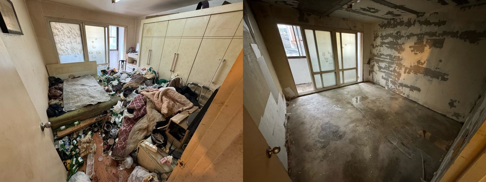
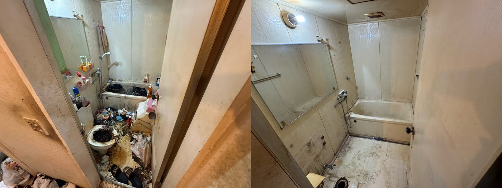
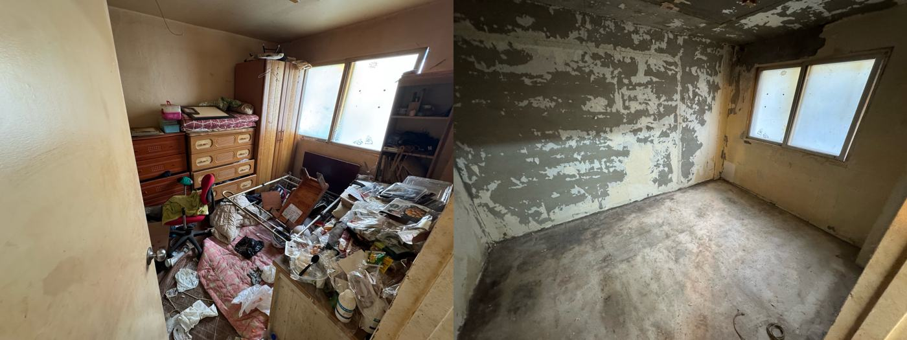
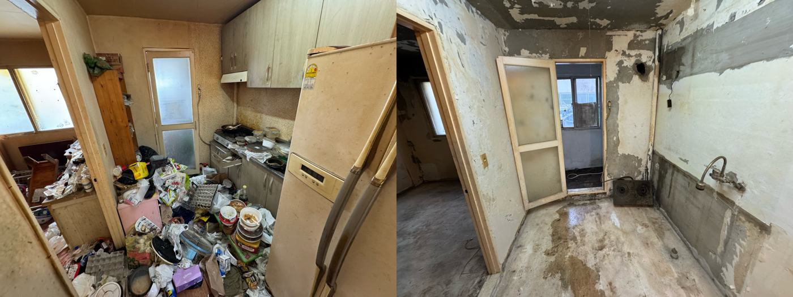
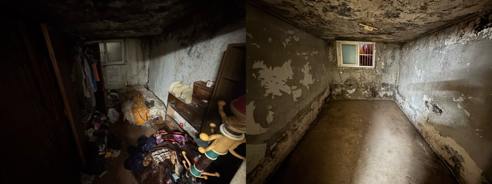
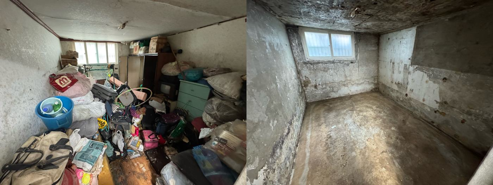
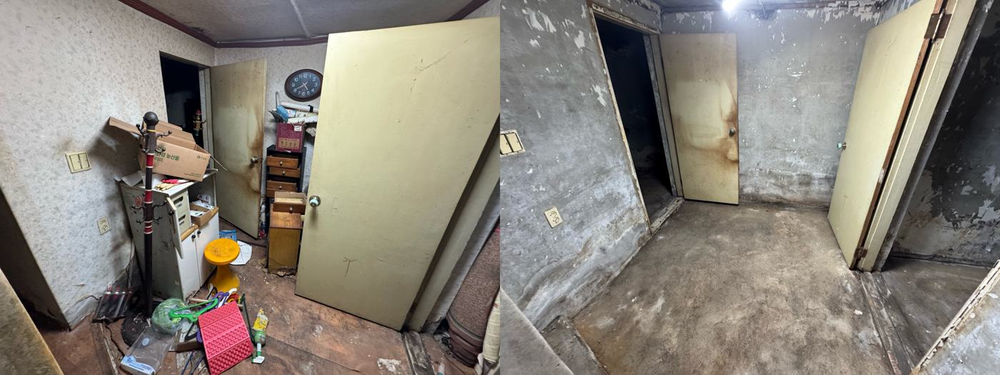
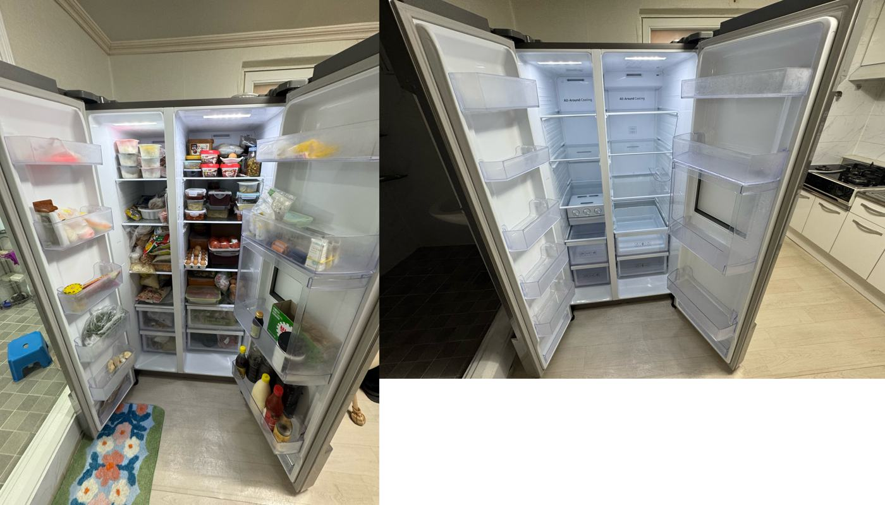
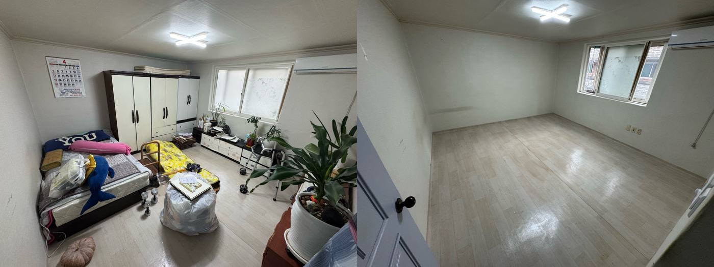
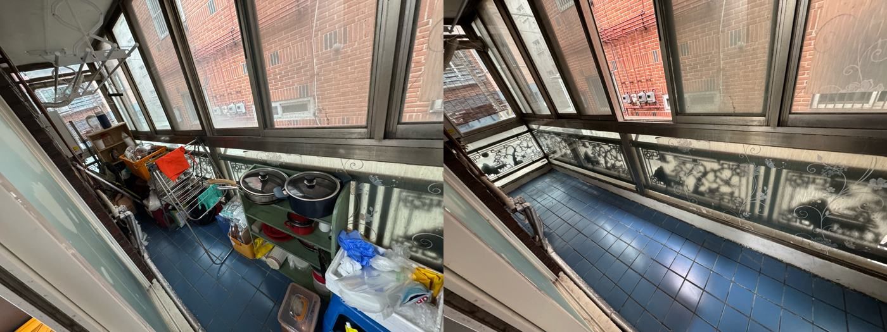
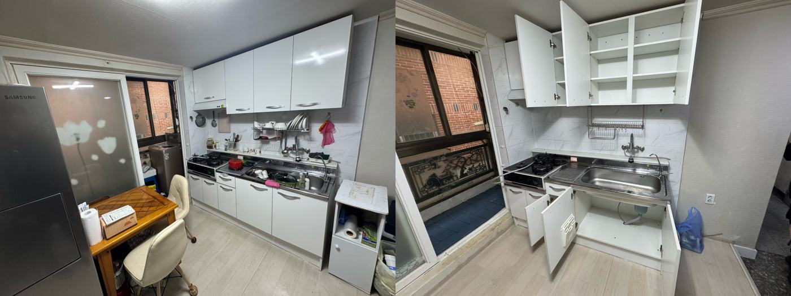
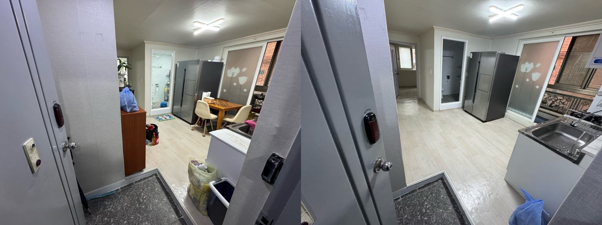
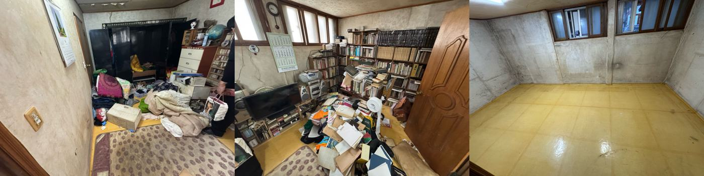
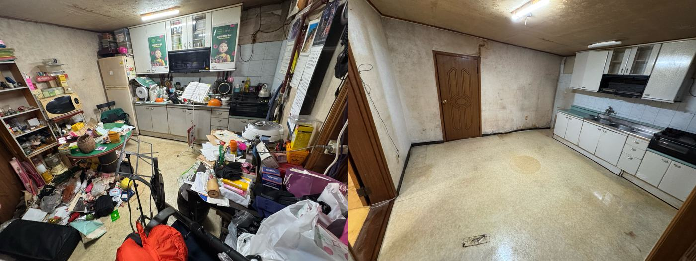
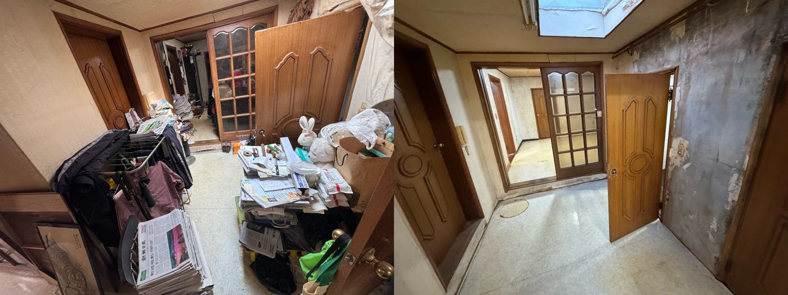
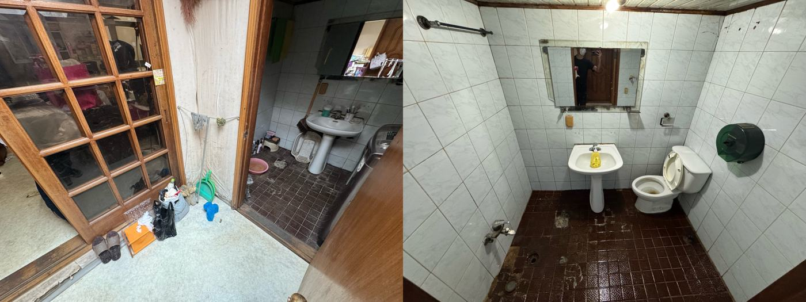
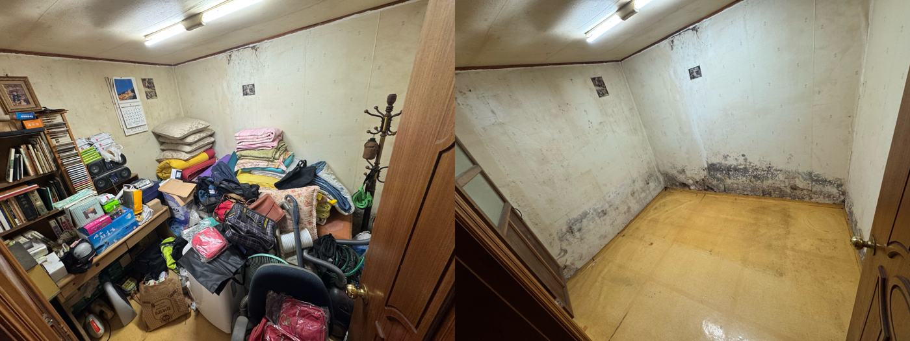
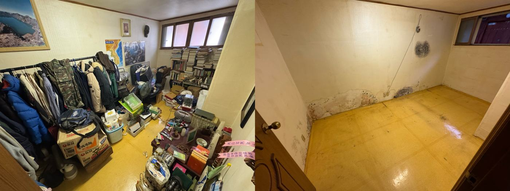
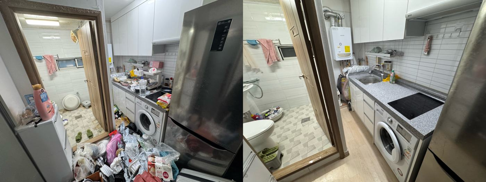
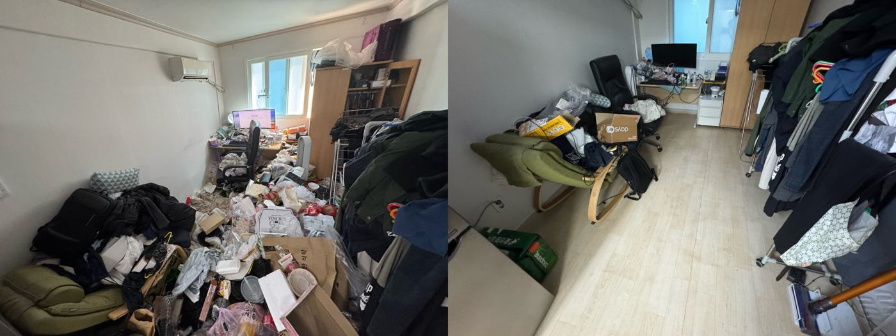
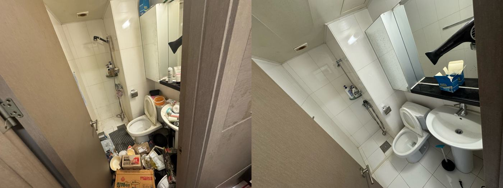
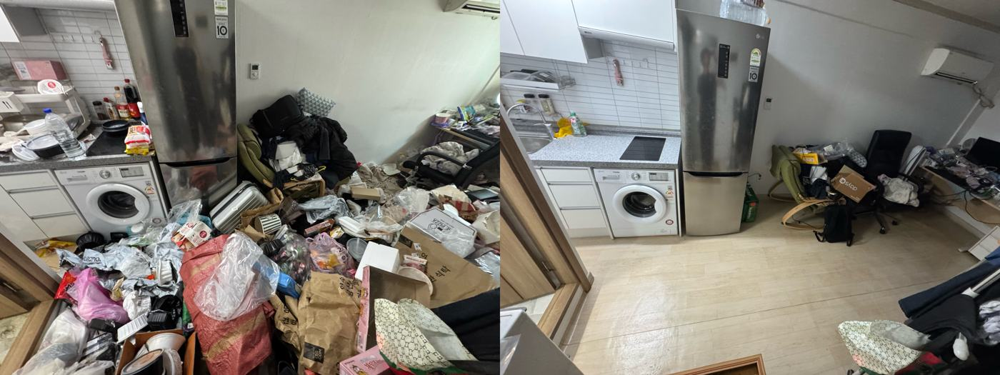
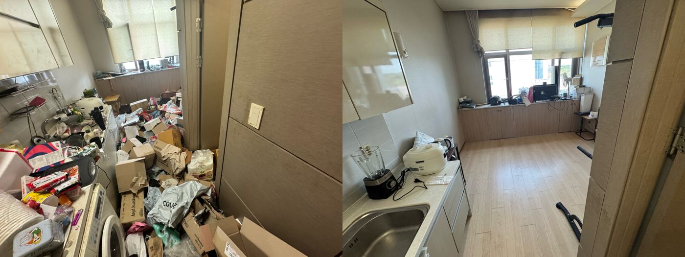
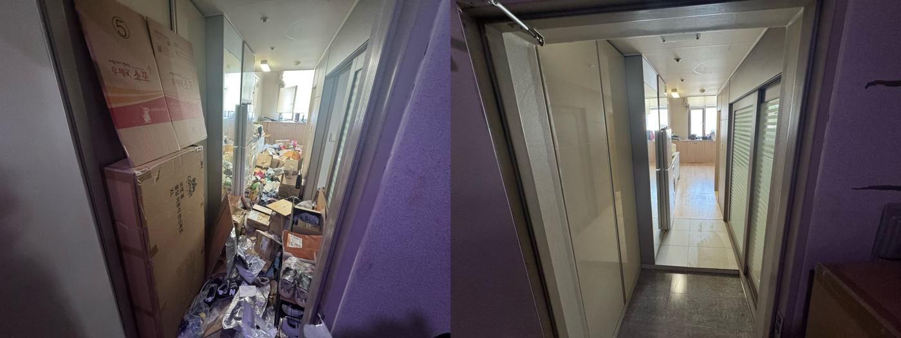
모든 사진은 공간회복24가 직접 작업한 현장입니다. 비슷한 상황이시라면 사진과 함께 상담을 남겨주세요. 더 많은 작업 기록은 네이버 블로그에서 보실 수 있습니다.